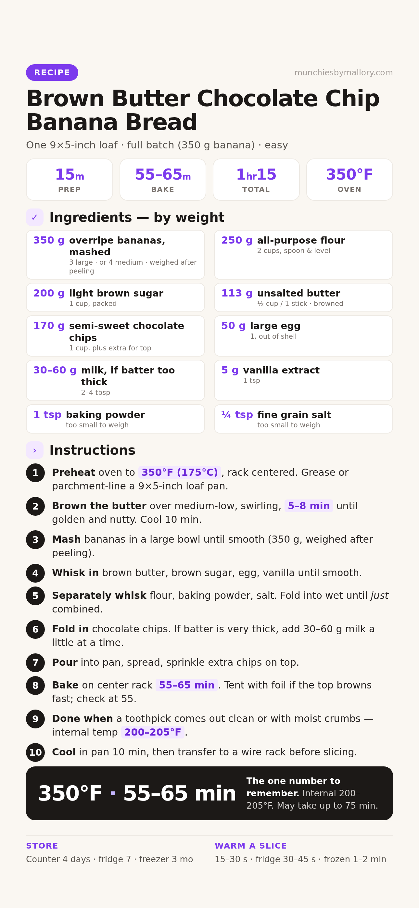

Nutty brown butter, molasses-sweet crumb, chocolate in every slice. This is the original full-batch recipe — 350 g of banana, which is three large or four medium bananas.

📱 For your phone — tap to open the full-size card, then save it to Photos.
The recipe runs on weight, not count, because banana sizes vary wildly. Peeled, mashed weight is what matters. Use this table to hit 350 g with whatever's on the counter:
| Banana size | Peeled weight each | For 350 g |
|---|---|---|
| Small | ~75 g | 5 bananas |
| Medium | ~90 g | 4 bananas |
| Large | ~115 g | 3 bananas |
| Extra-large | ~140 g | 2½ bananas |
Riper is better — the more brown spots on the peel, the sweeter and more banana-forward the loaf. If yours land a little short of 350 g (say 320 g), bake as-is; don't pad with extra flour.
For one 9×5 loaf. Grams lead; volume in the small line.
Weigh if you can — flour and banana especially. Set the bowl on the scale, press zero (tare) between ingredients, and go by grams. Banana is weighed after peeling.
All standard kitchen kit.
Set the oven to 350°F (175°C) with the rack in the center. Grease a 9×5-inch loaf pan or line it with parchment.
Melt 113 g (1 stick) butter in a saucepan over medium-low heat, swirling often. After 5 to 8 minutes it turns golden brown and smells nutty. Pour it into a heatproof bowl and let it cool 10 minutes.
What to expect: the milk solids drop to the bottom and toast there. Those brown specks are the flavor — scrape them all in.
Don't skip the cool-down. Hot brown butter will scramble the egg in step 3. Ten minutes is enough; the butter should be warm, not hot.
In a large bowl, mash the bananas with a fork until smooth, no big chunks. You want 350 g after peeling — three large or four medium.
What to expect: about 1½ cups of mash. Riper and spottier is better; under-ripe bananas leave the loaf flat-tasting.
Add the cooled brown butter, 200 g (1 cup) brown sugar, the egg, and 5 g (1 tsp) vanilla to the bananas. Whisk until smooth and glossy.
In a separate bowl, whisk 250 g (2 cups) flour, 1 tsp baking powder, and ¼ tsp salt until even.
Pour the dry mix over the wet and fold with a spatula until the last dry streaks just disappear.
Stop folding the moment it comes together. Overmixing builds gluten and turns a fluffy loaf dense and chewy. A few small lumps are fine.
The batter should slump off the spatula in a thick ribbon. If it stands stiff, add 30–60 g (2–4 Tbsp) milk a tablespoon at a time, folding between each.
Target: thick but scoopable, like heavy cake batter. Very ripe bananas add enough liquid that you may not need any milk at all.
Fold in 170 g (1 cup) chocolate chips, reserving a small handful for the top.
Pour the batter into the prepared pan, spread it level, and sprinkle the reserved chips over the surface.
Bake at 350°F (175°C) for 55 to 65 minutes. Start checking at 55 — ovens and banana moisture vary, and this loaf can take up to 75 minutes.
Watch the top. If it's browning fast but the middle isn't done, lay a loose sheet of foil over the pan halfway through.
Stick a toothpick in the very center. It should come out clean or with a few moist crumbs, no wet batter. With a thermometer, aim for 200 to 205°F internal.
Let the loaf sit in the pan 10 minutes, then lift it out and move it to a wire rack. Cool to warm before cutting — the crumb finishes setting as it cools.
Don't cut it hot. A hot loaf squashes and goes gummy under the knife. Thirty minutes of patience buys you clean slices.
CounterAirtight at room temperature up to 4 days. From day two, microwave a slice 15–30 s to bring back the fresh-baked softness.
FridgeAirtight up to 7 days. Microwave a slice 30–45 s before eating.
FreezerWrap the whole loaf or individual slices tightly in plastic, then bag. Freezes up to 3 months. Thaw on the counter or microwave a slice 1–2 min.
Two suspects: overmixed batter or too little liquid. Next bake, fold only until the streaks vanish, and check the banana was truly ripe.
Loaf baking hotter than expected. Tent with foil and give it up to 10 more minutes; trust the thermometer, not the clock.
Flour was probably over-measured — scooping packs in 20% more than spooning and leveling. Next bake, weigh the flour: 250 g exactly.
Batter was too thin. Next bake, cut any added milk and toss the chips in a teaspoon of flour before folding them in.
Oven runs hot or the pan is dark metal. Tent with foil at the 30-minute mark next time, or drop to 340°F.
Bananas weren't ripe enough. Next bake, ripen them in a 300°F oven for 15–20 min until black and soft, or add ¼ tsp cinnamon to the dry mix.